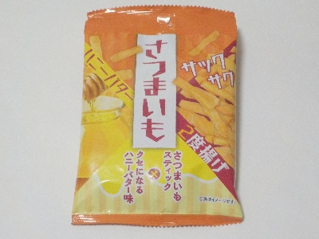
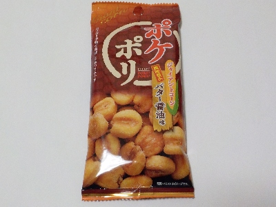
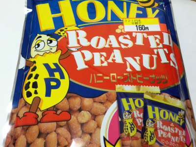

タクマ食品のさつまいもスティックハニバター味。
2024/10/03

あっさり味のさつまいもスティックに、しっかり味のパウダーがかかってました。パウダーは甘かったり辛かったりはちみつっぽかったり香ばしかったりで美味しかったです。
内容量が22gでちょっとなので、すくになくなりました。
愛知県春日井市松河戸町3丁目15番地3
2024/10/03

あっさり味のさつまいもスティックに、しっかり味のパウダーがかかってました。パウダーは甘かったり辛かったりはちみつっぽかったり香ばしかったりで美味しかったです。
内容量が22gでちょっとなので、すくになくなりました。
2024/03/02

ジャイアントコーンといえばグリコのジャイアントコーンのイメージしかありませんでした。
ミックスナッツとかに入っている巨大なトウモロコシのような豆みたいなやつはジャイアントコーンっていうんですね。
そんなジャイアントコーンのお菓子です、バター醤油味で塩分がしっかり効いているので、おつまみにピッタリだと思いました。
カラカラでザクザク感のあるコーンが、オカキっぽかったです。普通に美味しい。もっと普及してもいいかもと思いました。
2024/01/02

甘く味付けされた小粒のヒーナッツです。
小袋が沢山入っていて好きな分量で食べれますが、もう一つ、もう一つと1度に何袋も食べてしまいました。